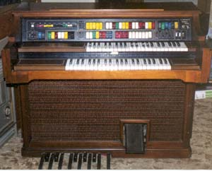
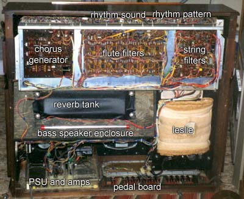

The organ as a source of synthesizer parts.

The Lowrey Symphonic Holiday
|
Starting out in synthesizer DIY? Need parts? Looking at an old organ may be your answer. Many organs from the seventies, and even the eighties are frequently available at rock bottom prices on the second hand market. What do you get for your money if you buy one? Here I look at the insides of a Lowrey Symphonic Holiday from 1975.
Having repaired the Citation, I was again on the lookout for a second hand organ for parts. I found a Lowrey Symphonic Holiday listed in the local Trading Post for $250, about a quarter of the usual asking price. I arranged to have it delivered C.O.D. without even going to look at it. I was told it was in excellent condition. It wasn't. If I had paid more, or was wanting to use it as an organ I may have been upset, but in this case the parts of the organ in which I was interested were fine. Several slide pots had broken. (Who's the idiot that designed slide pots with plastic shafts?) The power supply had the tendency to suddenly shut down, and the output was generally weak. Replacing the electros across the zeners in the power supply brought that back to full operation. Also, as is common in old organs that haven't been used a lot, a number of switches and keys had corroded contacts. In the case of Lowrey organs, these usually come good with use.
What parts in an organ are of use?
This of course depends on the model of organ you buy, but in most cases you can expect to get the following:
- Keyboards.
Most common organs have two keyboards: the upper and lower manuals. In the case of a spinet, the keyboards will usually be 44 keys each. Some up-market spinets may have as many as 49 keys per keyboard, while entry level organs may have as few as 37 per keyboard. Consoles will have 61 keys per keyboard. Some organs may also have a third "solo" or "synthesizer" keyboard.
Possible use: Needless to say, you will want a keyboard for your synth. In the case of 44 note keyboards, it may be possible to mount the upper and lower manuals side by side to give a massive 88 keys! Note that Lowrey organs use keys from single 88 note keyboard to make their organs. As such the lower manual keys do not cover the same range as organs by most other manufacturers. Keyboards from other brands probably cannot be joined to form a single 88 key manual.
Notes: In older organs, especially the more complex ones, keyboards will have several contacts per key. As features drop, or age drops, the number of contacts will also go down. The lower manual will usually have less contacts than the upper manual too. On the Holiday, there are five contact sets on the upper manual, and only one set on the lower manual (plus a few extras on the bottom octave for automatic accompaniment).
The Lowrey keyboards are about twice the depth of the keyboards used by Roland and have their switches behind, rather than below the keys.
- Pedal board
Spinets have a one octave pedal board, while consoles have a massive radial pedal board that covers two octaves.
Possible use: Wire it up as a 1 volt per octave keyboard. Then you could use it to play a base line with a VCO set to a low frequency, or to control the key in which your sequencer is playing. The later strikes me as the better use. I'm forever trying to find a spare hand to change the sequencer key.
- Amplifier and speakers.
All but entry level organs will usually contain a number of speakers. This may include base, midrange and leslie, rated in the 25W to 50W range. The number of amplifiers also varies, but a stereo amplifier is not uncommon. The Citation ran two 35W amps while the Holiday had four 30W amps.
Notes: The leslie speaker (genuine Leslie in this Lowrey) will be built on a sheet of ply. You will need to make a cabinet for it yourself, if you remove it from the organ. Some leslies are two speed, some are single speed (tremolo) only.
The bass speakers in this organ used "rubber" surrounds between the edges of the cone and the frame. Suddenly, late 2002 these disintegrated. The speakers were not worth repairing. Apparently a lot of products made around the mid 70's to early 80's used this (synthetic?) rubber, and most of it is failing.
- Expression pedal
Possible use: Set it up so it gives a voltage out, then use it to control any aspect of the synth you like.
Notes: This may be integral with the amplifiers. In the Holiday, the expression pedal controls four LM3080 "VCA"s, one for each of the four power amplifiers.
- Cabinet.
Possible use: I cut the cabinet of the Holiday down, effectively making it into a speaker box. It also contains the amplifiers. It would be possible to build the synth into the cabinet, but as such it would not be very portable.
Notes: The older the organ, the better the wood. The 1971 Citation uses slab construction, with pieces of real wood where appropriate. The 1975 Holiday is made out of veneered chipboard and doe moldings. Some cabinets by other manufacturers are even veneered in plastic, which has the annoying habit of shrinking. Older Yamahas use plywood, which is superior to chipboard, in their cabinets. I have not investigated a newer Yamaha to be able to comment on what they used later.
- Reverb Tank.
In my experience, most organs have a reasonable reverb tank. Some may even be built in such a way that you can salvage the driving circuitry too.
- Rhythm Unit.
The rhythm unit in an organ varies with age and the price of the organ. There are two sections to a rhythm generator: the sound generator and the pattern generator. The sound generators should be salvageable, even if you don't like the corny rhythm pattern generator. Personally, I do, so I salvage the lot.
Possible use: As a rhythm unit :)
Notes: It may be possible to pick off clock and downbeat signals from the rhythm unit and use them to drive other aspects of your synth, such as sequencers. I have done this with the Citation. An additional divider was needed to reduce the clock speed down to an appropriate rate, though depending on the rhythm selected, this division may vary (usually 2 or 3).
Some rhythm generators use specialized "ROMS" while others are totally discrete. The rhythm unit may also be tied into "automatic play" features of the organ. More than likely you will not want the auto play circuitry.
- Chorus generator.
Some more expensive organs feature a chorus generator, usually part of the string section.
Possible use: Fatten up the output of the synth.
Notes: Chorus generators are the exception rather than the rule. Both of my organs contained one. In the Citation, it was a simple transistor phase shifter. It's better than nothing, but certainly doesn't emulate string synths.
The chorus generator was a major selling point of the Symphonic Holiday. It features three bucket brigade delay channels, two of which have their own separate amplifiers. The BBD chip is an oddity - a six pin "can". None the less, it is a pretty effective unit. It does however make a bit of spurious noise, probably due to dust in the trim pots. Placing it in circuit before the master volume control and/or expression pedal, or feeding it through a noise gate may be appropriate.
- Other parts.
"Tabs" or "Stops" are specialized switches. You may be able to salvage some of them, depending on style and vintage. They may be part of switch banks, making them unusable.
Much of the circuitry in an organ will be using custom parts. Sometimes these parts may simply be relabelled regular chips. An easy way to work this out is to check a MITA parts catalogue, as these may well list the correct device number. There are several such listing on the internet. Older organs will be mostly transistorized, with the number of chips increasing in more recent examples. If you are interested in using the chips, pick an organ of the mid seventies to early eighties vintage. You should really consider this a low priority. Other parts can be used on a part by part basis. Electros probably are not worth salvaging, especially in an older organ.
Wire. There's heaps of it. It may be solid core though.
What to consider when choosing an old organ.
- Price: Never pay more for an organ than what you would pay for the parts you need. Be prepared to watch the market for a couple of months. Also be prepared to do a little research. In my case I was lucky enough to have easy access to a large collection of brochures from the seventies, as well as having seen many organs in showrooms when they were new. If you know what the organ is, you can easily recognize the real bargains.
- Era: The age of the organ will effect price, technology, construction etc. I felt this to be a major consideration when I chose my parts organ. I feel the optimal period of manufacture is 1975 - 1980.
- Brand: This will have a major effect on what you find inside. My personal hands-on experience of what's inside these organs is limited to Lowrey, Yamaha, Welson, Kawai, Farfisa and Schober. I found the design philosophy of Yamaha from the same era was somewhat different to that of Lowrey. One Yamaha I frequently played was effectively a ten oscillator polysynth, in the way it handled its keyboards.
- Circuit diagram: Want to use any of the circuitry? Make sure the service manual is available BEFORE you buy. Again, refer to MITA web sites, such as Organ Service Corporation.
- Parts availability: It doesn't hurt to know if there are spares available, especially if you salvage whole circuit sections.
- Condition: Old organs are rarely in good condition. Some are lovingly cared for and serviced regularly, while other deteriorate. You will most likely be buying one in poor condition. If you buy one that is too good, you may not be able to bring yourself to pull it apart. Don't buy one with obviously broken keyboards.
- Historic Value: Don't go pulling apart a true classic. You'll hate yourself, and so will every body else. (Leave those Hammond tone wheels alone.)

Some of the sections of the Symphonic Holiday when viewed from behind. Hidden from view are the top octave synthesiser and the keyer circuit boards.
Article, art & design copyright 1999 by Ken Stone
Modular Synth Home Disclaimer
|